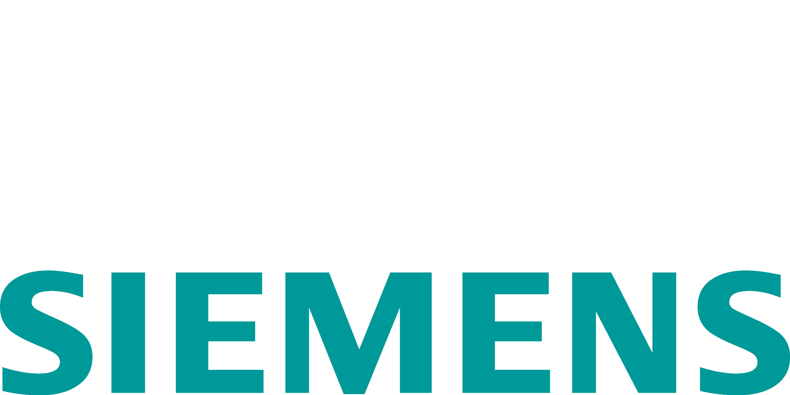
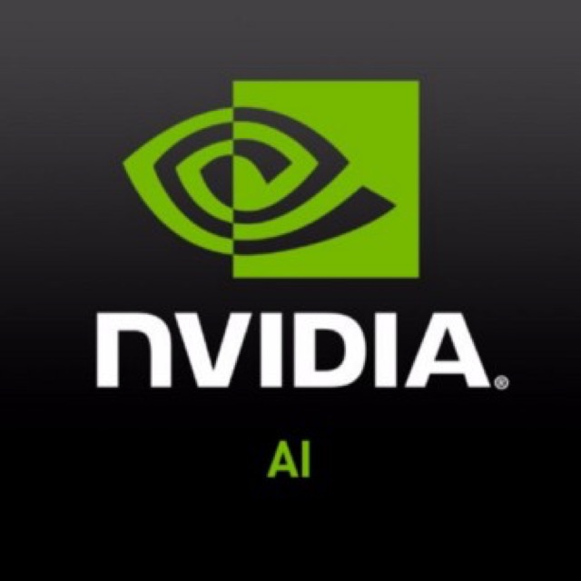
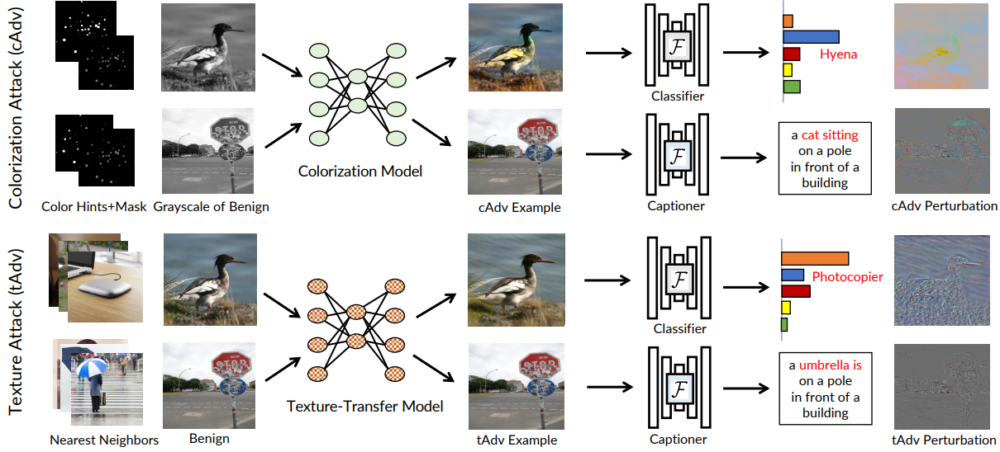
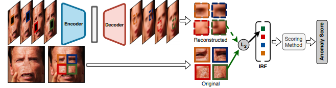

|
I am a CS PhD student in the Computer Vision Group of UIUC working with Prof. David Forsyth. My research interests are in Computer Vision, Computational Photography, Computer Graphics and Machine Learning. My current research focus is on photorealistic image manipulation and synthesis. Before starting my PhD, I completed my MS in Computer Science at UIUC. In previous lives, I worked on Damage Assessment of Civil Infrastructure Systems and graduated with an MS from UIUC and B.Tech from NITK Surathkal in Civil Engineering. I spent my Summer 2019 at Fyusion Inc, working with Abhishek Kar on image-based relighting. I will be joining NVIDIA's Applied Deep Learning Research (ADLR) team for summer 2020 Email / CV / Google Scholar / Twitter / Github |
|

|
 |
 |
||||
| NITK Surathkal 2011-2015 |
MSU Summer 2014 |
UIUC 2015-present |
Siemens Research Summer 2017 |
Fyusion Inc Summer 2019 |
NVIDIA Summer 2020 |
|
 |
Anand Bhattad*, Min Jin Chong*, Kaizhao Liang, Bo Li, David Forsyth ICLR, 2020 CVPR-W on Adversarial ML in Real-World Computer Vision Systems, 2019 A new family of unrestricted perturbations that manipulate semantically meaningful image-based visual descriptors -- color and texture -- in order to generate effective and photorealistic adversarial examples. |
|
|
Mao Chuang Yeh, Shuai Tang, Anand Bhattad, Chuhang Zou, David Forsyth WACV, 2020 A novel quantitative evaluation procedure for style transfer methods. Our procedure relies on two statistics: the Effectiveness (E) statistic measures the extent that a given style has been transferred to the target, and the Coherence (C) statistic measures the extent to which the original image's content is preserved. |
|
 |
Anand Bhattad, Jason Rock, David Forsyth CVPR-W on Vision with Biased or Scarce Data, 2018 A simple unsupervised method for detecting anomalous faces which works well with rare and unseen anomalies. |
|
Graduate Teaching Assistant, CS498 Applied Machine Learning, Fall 2018
Graduate Teaching Assistant, CS225 Data Structures, Spring 2017 Graduate Teaching Assistant, CS101 Intro Computer Science, Spring 2016 (Ranked as Outstanding TA) & Fall 2017 |